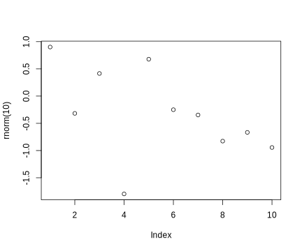
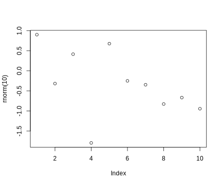

using RCall # Julia session must be set up, see RCall.jl docs
R"plot(rnorm(10))"; # Evaluates in R
Mattias Villani
The RCall.jl package makes it possible to call R from Julia.
An R package or function may be lacking in Julia
Benchmarking against methods in R packages.
RCall.jl does:
Sends R commands to an R session in the background.
Moves data from Julia to R, and R back to Julia.
Transforms data structures in Julia to the “right” data structure in R. Dictionary -> list etc.
Enter R mode by typing $ to get access to R console.
To send a command to R, use R"julia_expression"

$ -syntaxJulia variables can be sent to R with @rput .
R variables can be sent back to Julia with @rget.
# Just some regression data to play with
n = 100
p = 3
X = randn(n,p)
β = [1, 2, 0.5]
σ = 0.3
y = X*β + σ*randn(n)
@rput y # y now lives in the R session
@rput X
R"modelFit <- lm(y ~ X)"
R"betaHat <- modelFit$coef"
βhat = @rget betaHat # Pull the R variable betaHat back to Julia
βhat # lives in Julia now4-element Vector{Float64}:
0.043620495361893274
0.9772471884035804
2.014358371543607
0.592342891482621For longer multiline code chunks, use the triple quotes:
Wrap R functions into Julia functions (works also for installed packages):
function ARMAacf(ar, ma; lagmax, pacf = false)
R"""
acf_theo = ARMAacf(ar = $ar, ma = $ma, lag.max = $lagmax, pacf = $pacf)
"""
@rget acf_theo
return acf_theo
end
ARMAacf([0.5, -0.2], [0.3]; lagmax = 5) # This is Julia function now6-element Vector{Float64}:
1.0
0.5646766169154229
0.08233830845771144
-0.07176616915422887
-0.052350746268656725
-0.011822139303482589The JuliaCall package in R can be used to call Julia code from R.
One time setup (install Julia first):
library(JuliaCall)
options(JULIA_HOME = " ~/.juliaup/bin/julia") # Set path to Julia binary
julia_setup() # Setup Julia
julia_command("a = sqrt(2.0)") # Just testing the installHere is a simple example:
julia_install_package("LinearAlgebra") # Installs Julia package
julia_library("LinearAlgebra") # Loads Julia package
julia_install_package("Distributions")
julia_library("Distributions")
julia_source("code/poisloglik.jl") # Julia code file, contains:
#function poisreg_loglik(β, y, X)
# return sum(logpdf.(Poisson.(exp.(X*β)), y))
#end
# This is the R function definition, wrapping the Julia function
poisreg_loglik <- function(beta_, y, X){
return(julia_call("poisreg_loglik", beta_, y, X))
}
X = cbind(1, matrix(rnorm(100)))
beta_ = c(0.5,-0.5)
y = rpois(100, lambda = exp(X %*% beta_))
poisreg_loglik(beta_, y, X)The PyCall.jl package makes it possible to use Python code from Julia.
At setup, you may need to tell PyCall.jl where your Python install is with ENV["PYTHON"] = "~/anaconda3/bin/python" (this is my path) and then re-build PyCall from the package manager with ] build PyCall
Here is an example using the matplotlib library in Python for plotting
Using Newton’s method in the Python package SciPy for root finding
Using Python function in Julia:
Wrap a Python function in a Julia function